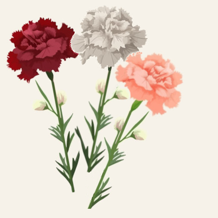

Vibra anche tu nella magica, antica, nostalgica
atmosfera evocata dalle note del violino:
Bravissima Karolina Podorska che ci
stupisce con la sua maestrìa nella
esecuzione di questo brano, 'Inverno',
delle 'Quattro Stagioni' di Vivaldi.
Nella parte iniziale e finale dell'armonia
avvertiamo un violino 'austero', che ci
ricorda la freddezza e durezza ed il
rigore della stagione invernale ma nella
parte centrale non poteva mancare il
violino più soave e dolce e suadente che
sussurra e che ricorda il bel tepore delle
giornate primaverili che si affacciano ogni
tanto a regalare lietezza, speranza nonché
mitezza del tenebroso inverno.
Davvero uno scrosciante applauso merita
la simpaticissima Alana Youssefian che
suona con stile barocco il suo vivace violino,
assieme a tutto il suo gruppo d'orchestra
Voice Of Music, e che, con questo pezzo
'Czardas' di Vittorio Monti, nella parte
iniziale ci 'strapazza' un po' il cuore di
romanticismo e nostalgia ma poi, con la
sua vivacità e ritmo, ce lo rende sereno,
allegro ed entusiasta facendo salire
sempre più la incontenibile impellenza di
ritmare tutto il corpo al tempo delle
vibrazioni del fantastico strumento che alla
fine è persino lietamente accompagnato
dal suono lieve e gentile del dolcissimo flauto.
Ehiiiii, non farti ammaliare e toccare
troppo il cuore dallo struggente sussurro
del dolcissimo violino!!!
Sappi che qui, nel mio spazio web, c'è anche
ampio spazio per il vorticoso bailar:
Ecco un altro brano da ballare ma che
è legato ad un famoso film che fa scender
giù la lacrimuccia di commozione perché
sa toccare con maestría la sfera del cuore
e del suo mondo di sentimenti:
Flashdance!!!
E diamo pure loro un po' la scossa daaaiiiii!!!
Ai nostri matusa intendo!!! Che ora sembrano
imbalsamati come mummie ma da giovani
ballavano e sgambettavano pure loro con il
rock and roll che li ha fatti innamorare!!!
Vi voglio bene papà e mamma!!!
(Summer Nights - From "Grease")
E quando ci vuole, ci vuoleeeeeee!!!
Saltiamo a bordo e partiamo pure noi in
OverDrive,
accecati dalle luci e in attesa del
magico 'touch' con il cuore che scoppia
di energiaaaaa!!!!
Non senza essere 'toccati' però dal
fantastico riverbero del tocco di chitarra
elettrica e ammaliati dal vibrare del
tocco eccelso del violino che rendono
questa canzone ancora più toccante
e adrenalinica!!!!
E quindi viiiiiiia, in overdriiiiiiiiiiiiive!!!!
Tutti in pista da ballo senza freniiiii!!!!!
Mondo: Un nuovo anno si affaccia!!! (25.12.24)
Stiamo per concludere il 2024 e ci attende
un nuovo anno che ci auguriamo possa
darci serenità, salubrità e tanta letizia e
gioia con tanti eventi felici, gratificanti
ed edificanti.
Un caro pensiero e buon augurio, il cuor
gonfio di compassione, ci sospinge
a rivolgerli in particolare a chi soffre
per i motivi più vari: a chi è solo, a chi
è anziano, a chi è ammalato, a chi è in
prigione, a chi subisce violenza, a chi è
povero, a chi è in guerra!
Buone feste e buon 2025!!
Mondo: Novembre! Cadono le foglie! (28.11.24)
Che triste scenografia ci presenta ora la
Natura!!!
Si vedono tante foglie rossicce e gialle che
cadono giù a terra!!!
Hanno catturato magicamente tanta luce dal Sole per dare vita e vigore alle piante ed ora,
solitarie, in silenzio, una ad una, lasciano la
pianta e vanno lievemente via!!!
Ma..... heeeiiii..... poco male!!!
A marzo le rivedremo più rigogliose che mai!!!
Ecco una poesia di Rosalia Calleri, a loro
dedicata, che ho trovato spulciando in Rete
e che recita più o meno così:
CADONO LE FOGLIE
Cadono giù le foglie, sono stanche,
hanno visto tant'acqua e tanto sole,
sbocciate con le tenere viole,
cadono prima delle nevi bianche.
La loro vita dura una stagione,
cadono a sciami frusciando,
ed i bimbi le sparpagliano passando
o le colgono per farsene corone.
Il vento le trasporta in mulinello,
e soffia e fischia con malinconia,
esse fan sempre questa via,
parton col brutto e tornan col bello.
Tornano sulla Terra come un fiore,
una rosa, compare, e poi sparisce,
e la foglia che a marzo rinverdisce,
non è quella che ora casca e muore!
Là nella macchia, un vecchio boscaiolo,
col rastrello lieto le raduna,
saranno letto per la mucca bruna,
saranno fiamme sotto il suo paiolo.
Rosalia Calleri
Mondo: Triste giorno!!! (25.11.24)
25 Novembre: in memoria, affinchè le donne
possano sempre avere un cuore che sparga
amore e mai grondi sangue!!!!!

Un garofano rosso per il loro dolore e sangue versato!!!
Un garofano bianco per la loro innocenza!!!
Un garofano rosa per la loro grazia e gentilezza!!!
Mondo: Eureka! (18.11.24)
La mia prima flow-chart scritta
al Liceo ed eseguibile qui in
linguaggio JavaScript!!!
Mondo: Triste giorno! (02.11.24)
Ricordiamo i defunti, ci hanno voluto
tanto bene e gradiscono un fiore
deposto con una lacrima sulla loro
eterna dimora!!!
Mondo: Eureka! (29.10.24)
Finalmente dal mio sito, posto chissà dove,
sul nostro pianeta, posso inviare sulle
libere ali della Rete, circumnavigando
mezzo mondo, un caro bacio e pensiero
alle mie 'heart friends'!!!
Con un forte abbraccio a M. G. e S.!!! VVTB!!!
Mondo: Eureka! (28.10.24)
La mia prima pagina web in HTML!!!
HyperText Markup Language: Linguaggio
a Marcatori (o a tag, che dir si voglia)
per IperTesto --- Wooooowwwww!!!!
Tap qui
per saltare nel mondo dei fiori.
Perchè sono di una bellezza e delicatezza straordinarie!!!
E che dire dei loro profumi???
Tap qui
per saltare verso la mia pagina di prova caratteri. Perchè un carattere di scrittura denota una personalità!!!
Tap qui
per saltare verso la mia pagina di prove varie. Perchè "provando si impara"!!!
Tap qui
per visitare la pagina del W3C Consortium
dove vi è l'elenco dei nomi dei colori che si
possono usare in HTML.
Perchè i colori fanno sorridere la vita!!!
Eddaaaaaiiiiiii, e scrivimi un poooooo'!!!!!
I suggerimenti ed anche le critiche
costruttive sono ben accette!!!!
Ma soprattutto i complimentiiiii!!!!!!
Nooo spaaammmm, pleaseeeeee!!!!!!!
(il tuo indirizzo e-mail di posta elettronica
sarà usato al solo scopo di ricevere il tuo
messaggio ed eventualmente risponderti!)